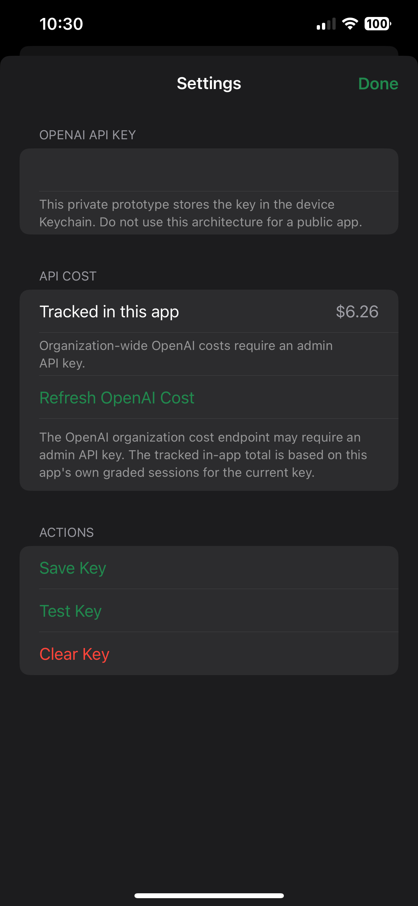
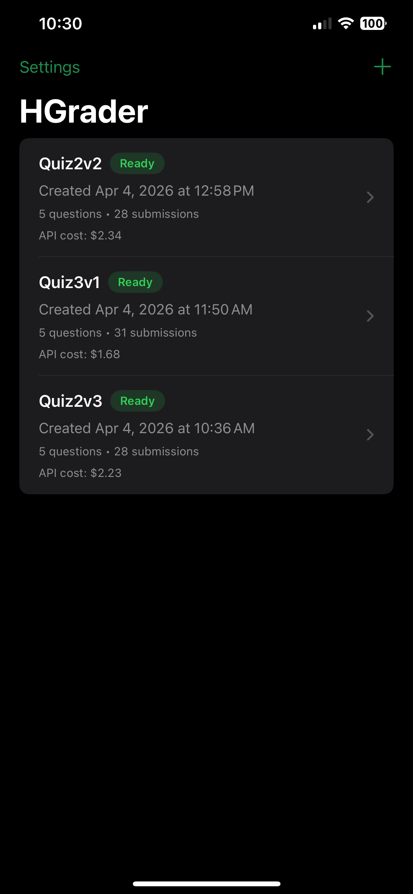

HGrader User Guide
Everything you need to scan, grade, review, and export assignments using HGrader on your iPhone.
Setup & API Key
Before your first grading session, configure your OpenAI API key:
- Open HGrader and tap the Settings icon (gear) in the top-right corner of the session list.
- Enter your OpenAI API key. The key is stored securely in the iOS Keychain and never leaves your device except in API requests to OpenAI.
- Optionally configure default model preferences for rubric generation, grading, and validation.

Grading Sessions
A grading session represents one assignment — from blank master to scored submissions.
Creating a Session
- From the session list, tap New Session.
- Choose the AI model for answer key generation (which model analyzes the blank assignment).
- Choose the AI model for grading (which model scores student work).
- Optionally enable a validation model for a second-pass accuracy check.
- Configure grading options: integer-only points, relaxed grading, and reasoning verbosity.
- Tap Create to open the session.
Session Tabs
Each session has three tabs:
- Overview — Session configuration, scanning controls, summary statistics, and export actions.
- Rubric — The generated answer key with per-question details. Review, edit, and approve the rubric here.
- Results — All graded submissions. Tap any submission to see question-by-question scores and AI reasoning.

New session

Session list
Scanning
Scanning the Master Copy
The master copy is the blank (or completed) assignment that defines the rubric:
- In the Overview tab, tap Scan Master.
- Position the assignment pages in the camera viewfinder. The scanner automatically detects page boundaries.
- Capture all pages. Tap Save when finished.
- The scanned images are stored in the session and sent to OpenAI for rubric generation.
Scanning Student Work
Batch mode is the recommended way to grade. Scan an entire stack, specify pages per submission, and HGrader sends everything as an asynchronous batch job to the API. You get results back without waiting per student.
Single-student mode is deprecated. Large frontier models have significant per-request latency, making one-at-a-time scanning impractical for real classes.

Scan method

Camera capture
Rubric Generation
After scanning the master copy, HGrader sends the images to OpenAI using the structured responses API:
- The AI analyzes the assignment and produces a structured rubric with identified questions, point values, and expected answers.
- Review the rubric in the Rubric tab.
- Edit any questions, point values, or expected answers as needed.
- Approve the rubric when it accurately represents the assignment.

Rubric view

Approve rubric
Grading Workflow
Once the rubric is approved and student work is scanned:
- Each student's scanned pages are sent to the grading model along with the rubric.
- The AI assigns scores per question, with reasoning for each score.
- If a validation model is enabled, a second pass checks the initial scores for accuracy.
- Results appear in the Results tab as they complete.
Grading Options
- Integer-only points — Restrict all scores to whole numbers.
- Relaxed grading — More lenient scoring for partial credit.
- Reasoning verbosity — Control how detailed the AI's explanations are.

Reviewing Results
In the Results tab, each submission shows:
- Student name and total score
- Per-question breakdown with points earned, points possible, and AI reasoning
- The original scanned images for reference
You can manually adjust any score. Changes are saved immediately to the local database.

Results overview

Question details
Exporting
HGrader offers two export formats:
CSV Export
A simple spreadsheet with student names and total scores. Suitable for manual grade entry.
Full Session Package
A ZIP file containing everything CanvasConnect needs:
session-summary.json— Session metadatasession.csv— Flat grade summaryrubric.json— The generated rubricmaster_scans/— Images of the blank assignmentsubmissions/— Per-student folders withsummary.jsonandscans/
Use the Share button to send the ZIP via AirDrop, Files, email, or any share target.
Troubleshooting
Rubric generation fails
- Verify your OpenAI API key is correct and has available credits.
- Ensure the scanned images are clear and well-lit.
- Try rescanning with better lighting or a cleaner copy.
Grading produces unexpected scores
- Review the rubric — incorrect expected answers will cascade to grading.
- Try enabling the validation model for a second accuracy check.
- For handwritten work, ensure scans are sharp enough for the AI to read.
Export package is incomplete
- Ensure all submissions have finished grading before exporting.
- Check that the session has a completed rubric.